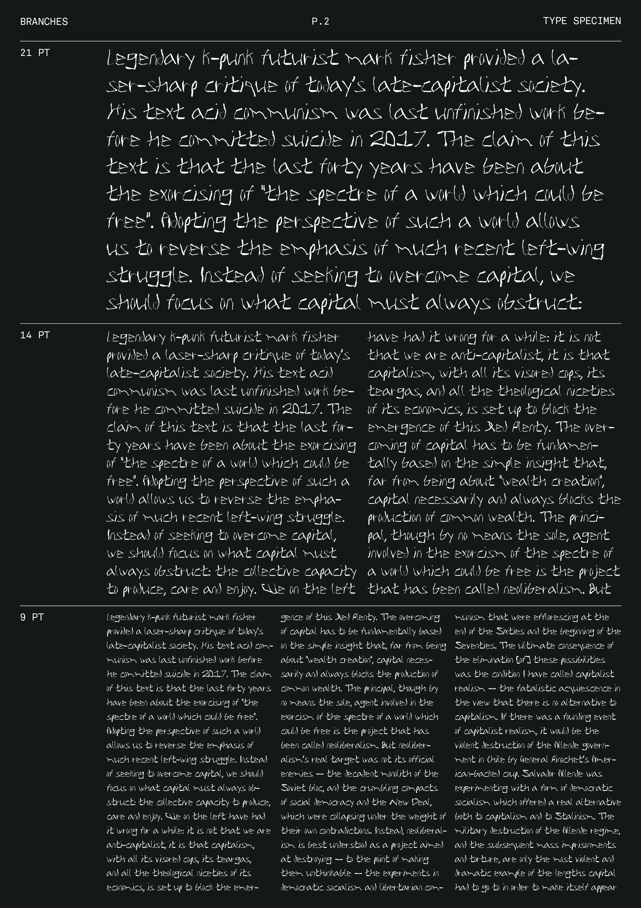
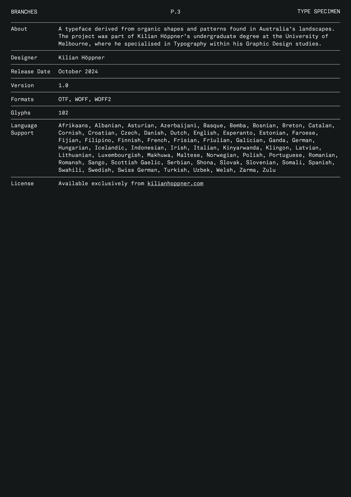
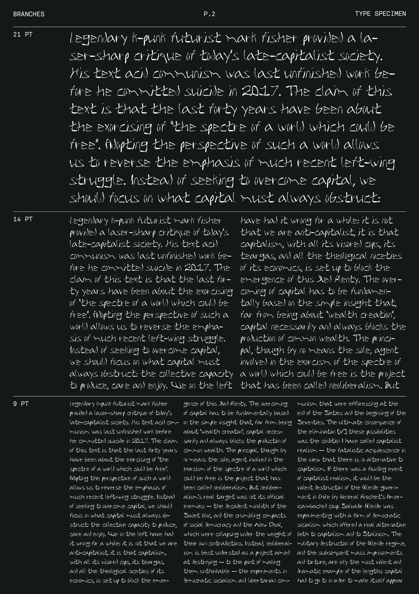
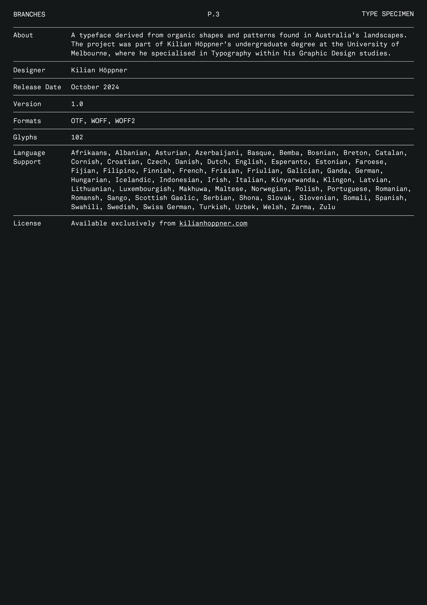

Branches is a typeface inspired by the organic shapes and patterns found in Australia's landscapes. Its branch-like forms embrace anomalies and imperfections, reminding us that beauty exists all around us, if we remain present.
 


